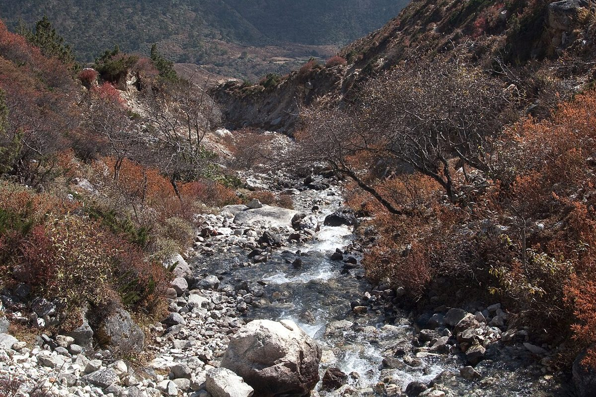
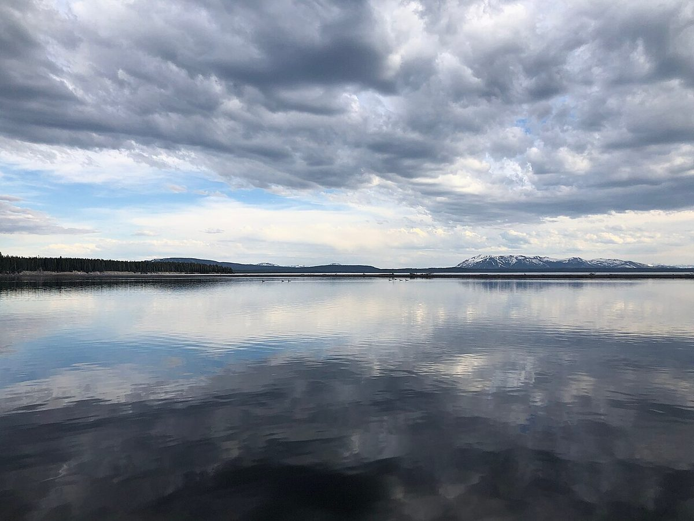

ちゃるら
パン屋 / 長野県伊那市長谷
制作側の連想
「ちゃ・る・ら」を、水の音に聞いてみる
屋号の由来は分かりません。制作側は「ちゃるら」の響きを、沢の水が石に当たって鳴る「ちゃ」、流れていく「る」、ひらけた水面の「ら」のような、水の音に重ねて聞いてみました。伊那市長谷は、一般に南アルプスの麓の山里として知られる地域です(お店との関係は不明です)。そこでこのサイトは、3つの音を飛び石のように並べた「沢音帖」として作っています。お店の理念・由来とは無関係の、制作側の連想です。
はじまりの一滴
山の水がいちばん最初に音を立てるところ。写真は国外のイメージ素材です。

ゆるく続く道
森の中を、水の流れのようにカーブしていく道。国外・撮影地不明のイメージです。


ひらける水面
流れが集まり、空が映る場所。国外のイメージです。
